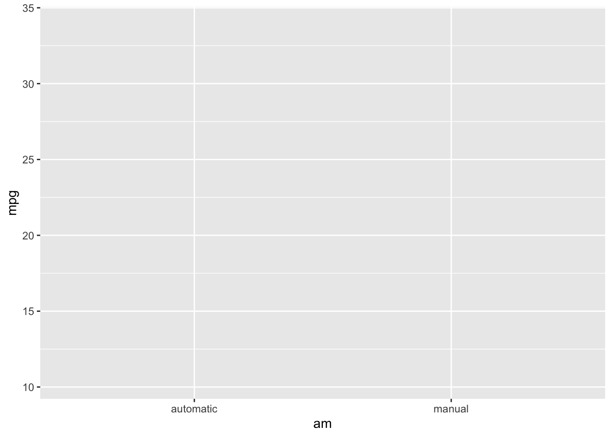
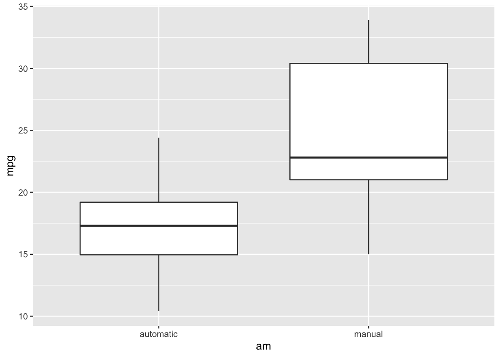
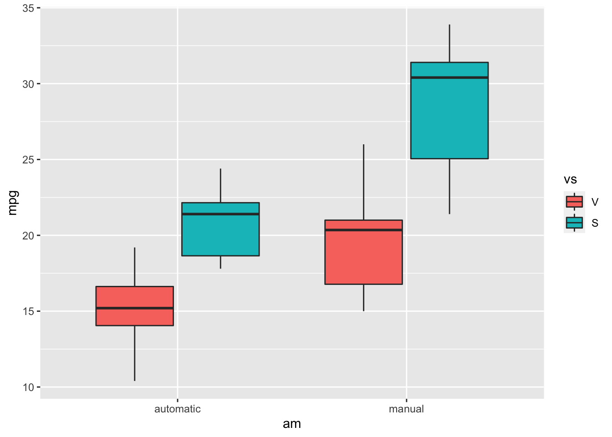
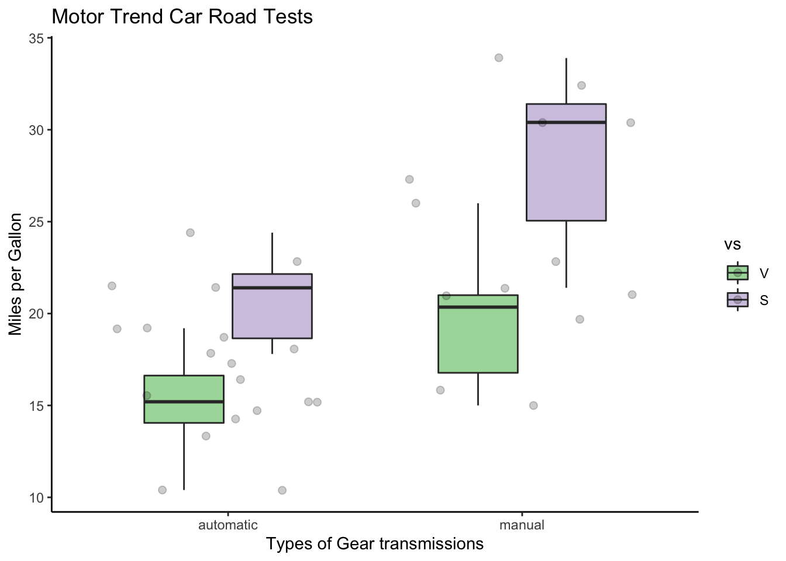
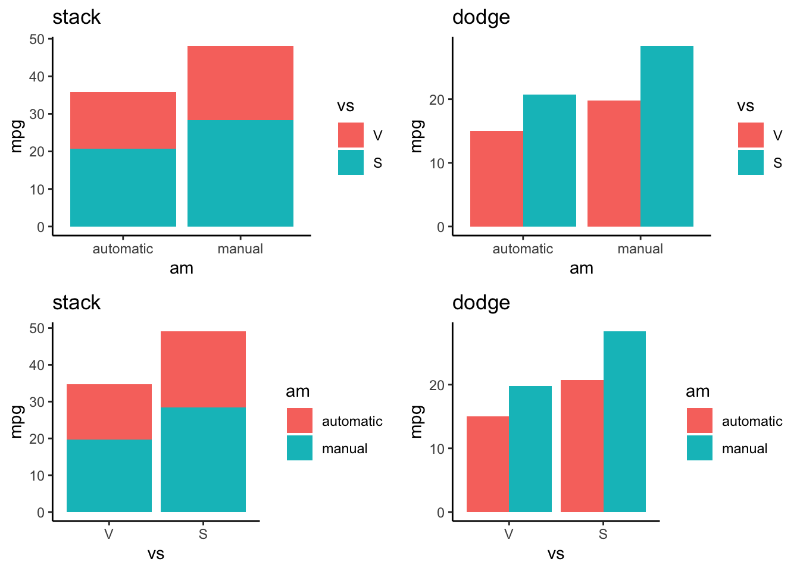
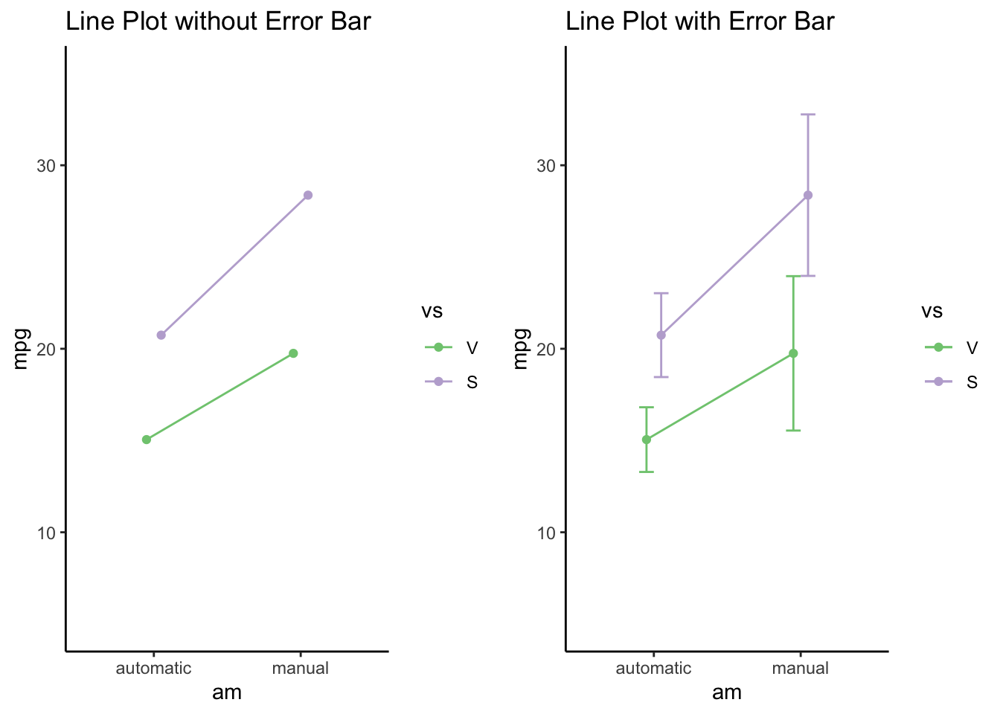
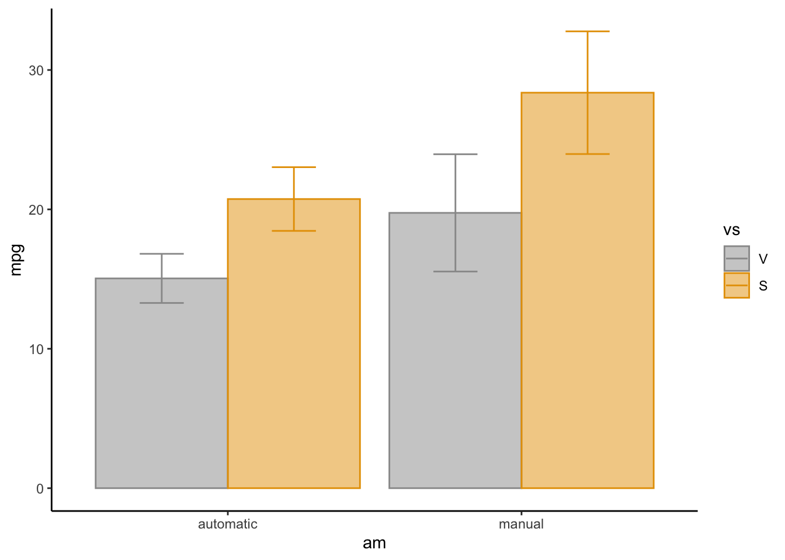
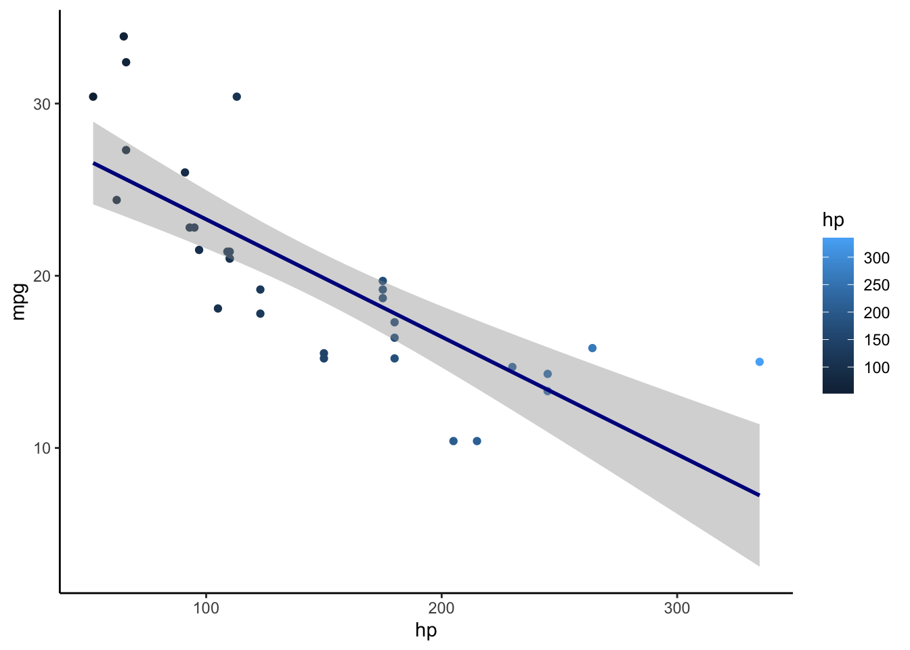
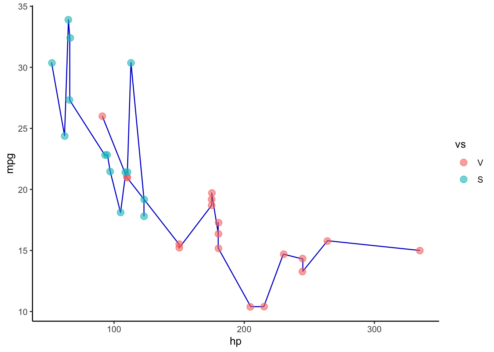

Lab 09: Data Visualization
Sirinapa Churassamee
การสร้างภาพข้อมูลหรือ Data Visualization ช่วยให้เราเข้าใจชุดข้อมูลที่มีความซับซ้อนได้ง่ายขึ้นและทำให้เราตัดสินใจในการจัดการกับข้อมูลเร็วขึ้น ซึ่ง Data Visualization สามารถทำได้ทั้งก่อนและหลังการวิเคราะห์เชิงสถิติ
การสร้างภาพข้อมูลใน R สามารถทำได้จากหลากหลาย package ซึ่งใน tutorial นี้เราจะใช้ package ggplot2 ซึ่งเป็น package ที่ช่วยให้เราสามารถสร้างกราฟิคได้หลากหลาย และสามารถปรับแต่งรูปแบบต่าง ๆ ได้ในแบบที่ต้องการ
#load packages
library(ggplot2)
library(psych)
library(Rmisc)Mtcars data
ใน tutorial นี้เราจะใช้ข้อมูลที่มีอยู่แล้วใน package ggplot2 ชื่อว่า mtcars ในการสร้างกราฟฟิค
หลังจาก import mtcars ลงมาแล้ว เราสามารถเซ็ตค่าตัวแปรได้ตามนี้
data("mtcars")
mtcars$vs <- factor(mtcars$vs, labels = c("V", "S"))
mtcars$am <- factor(mtcars$am, labels = c("automatic", "manual"))
mtcars$cyl <- as.factor(mtcars$cyl)
mtcars$gear <- as.factor(mtcars$gear)
mtcars$carb <- as.factor(mtcars$carb)
psych::describe(mtcars)## vars n mean sd median trimmed mad min max range skew kurtosis se
## mpg 1 32 20.09 6.03 19.20 19.70 5.41 10.40 33.90 23.50 0.61 -0.37 1.07
## cyl* 2 32 2.09 0.89 2.00 2.12 1.48 1.00 3.00 2.00 -0.17 -1.76 0.16
## disp 3 32 230.72 123.94 196.30 222.52 140.48 71.10 472.00 400.90 0.38 -1.21 21.91
## hp 4 32 146.69 68.56 123.00 141.19 77.10 52.00 335.00 283.00 0.73 -0.14 12.12
## drat 5 32 3.60 0.53 3.70 3.58 0.70 2.76 4.93 2.17 0.27 -0.71 0.09
## wt 6 32 3.22 0.98 3.33 3.15 0.77 1.51 5.42 3.91 0.42 -0.02 0.17
## qsec 7 32 17.85 1.79 17.71 17.83 1.42 14.50 22.90 8.40 0.37 0.34 0.32
## vs* 8 32 1.44 0.50 1.00 1.42 0.00 1.00 2.00 1.00 0.24 -2.00 0.09
## am* 9 32 1.41 0.50 1.00 1.38 0.00 1.00 2.00 1.00 0.36 -1.92 0.09
## gear* 10 32 1.69 0.74 2.00 1.62 1.48 1.00 3.00 2.00 0.53 -1.07 0.13
## carb* 11 32 2.72 1.37 2.00 2.65 1.48 1.00 6.00 5.00 0.35 -0.95 0.24โดยข้อมูลประกอบไปด้วย
mpg - จำนวนแกลลอนของน้ำต่อ 1 ไมล์
cyl - จำนวนกระบอกสูบ
disp - ความจุของเครื่องยนต์ (ลูกบาศก์นิ้ว)
hp - แรงม้า
drat - สัดส่วนของเพลากลางของรถ
wt - น้ำหนัก
qsec - ความเร่ง
vs - รูปร่างของเครื่องยนต์ ‘V’ หรือ ‘S’
am - ระบบเกียร์อัตโนมัติ (auto) หรือ เกียร์กระปุก (manual)
gear - จำนวนเกียร์
carb - จำนวนตัวเผาไหม้เครื่องยนต์
Ggplot2 Package
Ggplot2 เป็น package ในรูปแบบของ Grammar of Graphic ที่ความยืดหยุ่น ซึ่งในการเขียนคำสั่งของ ggplot2 นั้น จะมีลักษณะเป็นการเรียงคำสั่งในแต่ละขั้น
โดยปกติแล้ว คำสั่งที่ใช้งานพื้นฐานจะประกอบไปด้วย
data- การเรียกข้อมูลที่ใช้งานaesthetic mappings- การเลือกตัวแปรที่จะปรากฎอยู่ในกราฟgeometric objects- การเลือกวิธีการสร้างกราฟฟิคCustomizingเช่น การใส่ชื่อ เลือกธีม หรือลงสีให้กราฟ
นอกจากนี้ยังมีคำสั่งอื่น ๆ ที่มีความซับซ้อนมากขึ้น หากเราเริ่มคุ้นเคยกับคำสั่งพื้นฐานแล้ว เราสามารถศึกษาเพิ่มเติมให้กราฟฟิคมีความสวยงามและตรงตามความต้องการของเรามากขึ้นได้
การสร้างกราฟ
ก่อนที่เราจะสร้างกราฟ เราควรสังเกตตัวแปรที่เราต้องการนำมาสร้างว่าเป็นตัวแปรลักษณะใด โดยสามารถใช้คำสั่ง str()
str(mtcars)## 'data.frame': 32 obs. of 11 variables:
## $ mpg : num 21 21 22.8 21.4 18.7 18.1 14.3 24.4 22.8 19.2 ...
## $ cyl : Factor w/ 3 levels "4","6","8": 2 2 1 2 3 2 3 1 1 2 ...
## $ disp: num 160 160 108 258 360 ...
## $ hp : num 110 110 93 110 175 105 245 62 95 123 ...
## $ drat: num 3.9 3.9 3.85 3.08 3.15 2.76 3.21 3.69 3.92 3.92 ...
## $ wt : num 2.62 2.88 2.32 3.21 3.44 ...
## $ qsec: num 16.5 17 18.6 19.4 17 ...
## $ vs : Factor w/ 2 levels "V","S": 1 1 2 2 1 2 1 2 2 2 ...
## $ am : Factor w/ 2 levels "automatic","manual": 2 2 2 1 1 1 1 1 1 1 ...
## $ gear: Factor w/ 3 levels "3","4","5": 2 2 2 1 1 1 1 2 2 2 ...
## $ carb: Factor w/ 6 levels "1","2","3","4",..: 4 4 1 1 2 1 4 2 2 4 ...หลักการในการสร้างกราฟฟิคคือ การสังเกตจำนวนตัวแปรและลักษณะของตัวแปรในแกน x และ y โดยลักษณะของตัวแปรนี้จะเป็นการคัดรูปแบบกราฟของเรา
ใน tutorial นี้เราจะเรียนรู้สร้าง boxplot, bar graph และ line graph ค่ะ
การสร้าง boxplot
ในการสร้าง boxplot (หรือกราฟลักษณะอื่น ๆ) เราจะเริ่มกันที่การสร้างคำสั่งพื้นฐาน คือ data และ aesthetic mappings
โดยคำสั่งทั่วไปคือ ggplot(data = ชื่อไฟล์, aes(x = ตัวแปรแกน x, y = ตัวแปรแกน y)
คำสั่ง aes() สามารถเซ็ตค่าอื่น ๆ ได้ เช่น
ตำแหน่งของตัวแปร (
x =และy =)สี: โดย
color=เป็นสีเส้นขอบ และfill=เป็นสีด้านในshape =รูปร่างของจุดข้อมูล และsize =ขนาดของจุดข้อมูล
ggplot(data = mtcars, aes(x = am, y = mpg))
ถ้าเรา run คำสั่งข้างต้น เราจะพบว่า กราฟฟิคมีเพียง background (หรือ coordinate system) และชื่อตัวแปรของเราเท่านั้น ดังนั้นเราจึงจำเป็นต้องเขียนคำสั่งว่าเราต้องการให้กราฟออกมาเป็นรูปแบบใด (สามารถเข้าไปดูรูปแบบทั้งหมดได้ที่ help.search("geom_", package = "ggplot2")
สำหรับการสร้าง boxplot เราจะใช้คำสั่ง geom_boxplot() เพื่อเซ็ตค่า geometric objects
ggplot(data = mtcars, aes(x = am, y = mpg)) +
geom_boxplot()
จะเห็นว่ากราฟ boxplot ที่สร้างขึ้นมามีเพียงตัวแปร x และ y หากเราต้องการจัดกลุ่มตัวแปร เราสามารถใช้คำสั่ง fill = ตัวแปรจัดกลุ่ม ใน aesthetic mapping เพื่อให้มีการจัดกลุ่มของตัวแปรในกราฟ
ggplot(data = mtcars, aes(x = am, y = mpg, fill = vs)) +
geom_boxplot()
หากเราต้องการให้กราฟมีสีสันและชื่อแกนตามที่เราต้องการ เราสามารถเขียนคำสั่งต่อจาก คำสั่ง geometric ได้
ตัวอย่างคำสั่งอื่น ๆ ในการปรับแต่งกราฟ
เพิ่มลักษณะกราฟฟิค:
- หากเราอยากให้
ggplot2สร้างจุดข้อมูลในกราฟของเรา เราสามารถสั่งคำสั่งgeom_jitter()หลังจาก geometric objects หลักของเราได้
- หากเราอยากให้
ตกแต่งกราฟ:
ใช้คำสั่ง
alpha = ค่าโปรงใสเพื่อเพิ่มความโปร่งใสของกราฟใช้คำสั่ง
width = ค่าความกว้างของกราฟในการกำหนดความกว้างของกราฟ
เพิ่มชื่อ:
แกน x และ y: ใช้คำสั่ง
xlab = "ชื่อแกน x"และylab = "ชื่อแกน y"ชื่อหัวกราฟ: ใช้คำสั่ง
ggtitle("ชื่อหัวกราฟ")
เลือกใช้ theme:
ธีมของกราฟ: ใช้คำสั่ง
theme_ในการเลือกใช้ theme โดย คำสั่งtheme_classicจะใกล้เคียงกับ APAสีของกราฟ:
เลือกจาก palette ที่มีชุดคำสั่งสี
สีเส้นขอบ:
scale_color_brewer(palette = "ชื่อ palette ที่ต้องการ")สีช่องในกล่องหรือคอลัมน์:
scale_fill_brewer(palette = "ชื่อ palette ที่ต้องการ")
เลือกสีเอง
สีเส้นขอบ:
scale_color_manual(values=c("สีที่1", "สีที่2", "สีที่3"))สีช่องในกลุ่มหรือคอลัมน์:
scale_fill_manual(values=c("สีที่1", "สีที่2", "สีที่3"))
Note: หากเลือกสีเอง จำนวนสีต้องเท่ากับจำนวนกลุ่มตัวแปรที่ต้องการจะให้มีสี
ggplot(data = mtcars, aes(x = am, y = mpg, fill = vs)) +
geom_boxplot(alpha = 0.7, width = 0.6) +
geom_jitter(alpha = 0.2, size = 2) +
xlab("Types of Gear transmissions") +
ylab("Miles per Gallon") +
ggtitle("Motor Trend Car Road Tests") +
theme_classic() +
scale_color_brewer(palette="Accent") +
scale_fill_brewer(palette="Accent")
จะเห็นได้ว่าสีของกล่องข้อมูลเปลี่ยนไปตามที่เราตั้งค่าไว้ และมีการแสดงของจุดข้อมูลที่มาจากชุดคำสั่ง geom_jitter() โดยมีความโปร่งใสของจุดข้อมูลให้เห็นในกราฟ
การสร้าง Bar Graph
การสร้าง Bar Graph เหมาะสมกับตัวแปรต้นที่มีลักษณะเป็นกลุ่ม (discrete variable) ดังนั้นโครงสร้างของชุดคำสั่งจะคล้ายคลึงกับการสร้าง boxplot
เราสามารถสร้าง bar graph ได้ 2 วิธีคือ
geom_bar()จะมีคำสั่งพื้นฐานโดยมีความสูงของกราฟจากสัดส่วนของ n ในข้อมูลgeom_col()จะมีคำสั่งพื้นฐานโดยมีความสูงของกราฟเป็นค่าของข้อมูลนั้น ๆ คำสั่งนี้จะเหมาะสมกับข้อมูลที่ผ่านการหาค่าสถิติเชิงพรรณามาแล้ว (เช่นค่า n, mean, sd, se) และนำไปใช้งานได้สะดวกกว่าเมื่อต้องการสร้างerror_bar
ดังนั้น หากต้องการสร้าง bar graph อย่างง่าย เราสามารถใช้คำสั่ง geom_bar() ได้ โดยเพิ่มคำสั่ง stat = "summary" เมื่อต้องการค่าเฉลี่ย (mean) หรือ stat = "identity" เมื่อต้องการค่าผลรวม (sum)
นอกจากนี้แล้ว การสร้าง bar graph ยังสามารถเลือกการวางตัวของกราฟได้ โดยใช้คำสั่ง position =โดยค่าพื้นฐานของ geom_bar() คือ position = "stack" โดยจะเป็นการต่อกันของข้อมูลในแต่ละกลุ่ม ถ้าต้องการให้กราฟอยู่แยกกัน เราจะใช้คำสั่ง position = "dodge" หรือ position = position_dodge(ค่าความห่าง)
# x axis is am
# stack
stack <- ggplot(data = mtcars, aes(x = am, y = mpg, fill = vs)) +
geom_bar(stat = "summary") +
ggtitle("stack") +
theme_classic()
# dodge
dodge <- ggplot(data = mtcars, aes(x = am, y = mpg, fill = vs)) +
geom_bar(stat = "summary", position = position_dodge(0.9)) +
ggtitle("dodge") +
theme_classic()
#x axis is vs
# stack
stack2 <- ggplot(data = mtcars, aes(x = vs, y = mpg, fill = am)) +
geom_bar(stat = "summary") +
ggtitle("stack") +
theme_classic()
# dodge
dodge2 <- ggplot(data = mtcars, aes(x = vs, y = mpg, fill = am)) +
geom_bar(stat = "summary", position = position_dodge(0.9)) +
ggtitle("dodge") +
theme_classic()
describeBy(mpg ~ am * vs, data = mtcars)##
## Descriptive statistics by group
## am: automatic
## vs: V
## vars n mean sd median trimmed mad min max range skew kurtosis se
## X1 1 12 15.05 2.77 15.2 15.1 2.3 10.4 19.2 8.8 -0.28 -0.96 0.8
## --------------------------------------------------------------------------------------------
## am: manual
## vs: V
## vars n mean sd median trimmed mad min max range skew kurtosis se
## X1 1 6 19.75 4.01 20.35 19.75 3.85 15 26 11 0.21 -1.53 1.64
## --------------------------------------------------------------------------------------------
## am: automatic
## vs: S
## vars n mean sd median trimmed mad min max range skew kurtosis se
## X1 1 7 20.74 2.47 21.4 20.74 3.26 17.8 24.4 6.6 0.1 -1.75 0.93
## --------------------------------------------------------------------------------------------
## am: manual
## vs: S
## vars n mean sd median trimmed mad min max range skew kurtosis se
## X1 1 7 28.37 4.76 30.4 28.37 4.6 21.4 33.9 12.5 -0.35 -1.73 1.8
การสร้างกราฟที่มี Error Bar
ในการสร้างกราฟแบบ bar graph และ line graph เราสามารถที่จะแสดงผลความคลาดเคลื่อนข้อมูลโดยเพิ่มคำสั่ง geom_errorbar() โดยเราสามารถหาค่า sd, se, หรือ ci จากข้อมูลที่เรามีก่อนการสร้าง Error Bar โดยใช้คำสั่ง summarySE() จาก package Rmiscโดยใช้คำสั่ง
summarySE(ชื่อไฟล์, measurevar = "ชื่อตัวแปรที่ต้องการหาค่ามาตรฐาน", groupvars = c("ชื่อกลุ่ม 1", "ชื่อกลุ่ม 2"))
library(Rmisc)
sum <- summarySE(mtcars, measurevar="mpg", groupvars=c("am","vs"))
sum## am vs N mpg sd se ci
## 1 automatic V 12 15.05000 2.774396 0.8008991 1.762767
## 2 automatic S 7 20.74286 2.471071 0.9339769 2.285359
## 3 manual V 6 19.75000 4.008865 1.6366124 4.207046
## 4 manual S 7 28.37143 4.757701 1.7982418 4.400139เมื่อได้ค่าความคลาดเคลื่อนออกมาแล้ว เราจะสร้างกราฟจาก object ที่มาจาก summarySE() นี้
โดยในการสร้าง line graph เราจะใช้คำสั่ง geom_point() และ geom_line() โดย geom_point() จะเป็นการกำหนดให้กราฟมีจุดที่เป็นค่า mean และ geom_line()จะเป็นการใส่เส้นกราฟ ซึ่งเราสามารถเซ็ตให้กราฟมีการแยกกลุ่มตามที่เรากำหนดโดยใส่ aes(group = ตัวแปรจัดกลุ่ม)
จากนั้น เพิ่มคำสั่ง geom_errorbar() ในการสร้าง error bar โดยใช้คำสั่ง aes(ymin = ชื่อตัวแปรค่า mean - ci, ymax = ชื่อตัวแปรค่า mean + ci) (Note: เราสามารถใช้ค่า sd หรือ se ในการสร้าง error bar ได้โดยการเปลี่ยน ci เป็น sd หรือ se)
หากกราฟที่ปรากฎออกมามีค่าแกน x และ y ที่ไม่สมดุล เราสามารถใช้คำสั่ง xlim() หรือ ylim() เพื่อปรับแก้สเกลให้เหมาะสมได้
#only plot
line.plot <- ggplot(sum, aes(x = am, y = mpg, color = vs)) +
geom_point(position = position_dodge(.2)) +
geom_line(aes(group = vs), position = position_dodge(.2)) +
ylim(5, 35) +
ggtitle("Line Plot without Error Bar") +
theme_classic() +
scale_color_brewer(palette="Accent")
#with error
line.error <- ggplot(sum, aes(x = am, y = mpg, color = vs)) +
geom_point(position = position_dodge(.2)) +
geom_line(aes(group = vs), position = position_dodge(.2)) +
geom_errorbar(aes(ymin=mpg-ci, ymax=mpg+ci), width=.2,
position=position_dodge(.2)) +
ylim(5, 35) +
ggtitle("Line Plot with Error Bar") +
theme_classic() +
scale_color_brewer(palette="Accent")
นอกจากนี้ การสร้าง error bar ด้วยคำสั่ง geom_errorbar() ยังสามารถนำไปประยุกต์กับ bar graph ได้เช่นกัน แต่ในกรณีรการสร้าง bar graph จากข้อมูลที่หาค่าสถิติจากคำสั่ง summarySE() มาแล้วนั้น สังเกตว่าจะมีค่า mean เฉลี่ยแต่ละกลุ่ม (และค่าความคลาดเคลื่อนอื่น ๆ) เท่านั้น ดังนั้นในกรณีนี้เราจะใช้คำสั่ง geom_col() ในการสร้าง bar graph
bar.error <- ggplot(sum, aes(x = am, y = mpg, color = vs)) +
geom_col(aes(fill = vs), alpha = .5, position = position_dodge(.9)) +
geom_errorbar(aes(ymin=mpg-ci, ymax=mpg+ci), width = .3,
position = position_dodge(.9)) +
theme_classic() +
scale_color_manual(values=c("#999999", "#E69F00", "#56B4E9")) +
scale_fill_manual(values=c("#999999", "#E69F00", "#56B4E9"))
bar.error
การสร้างกราฟรูปแบบอื่น ๆ
นอกจาก boxplot, Bar Graph และ Line Graph แล้ว package Ggplot2 ยังช่วยเราในการสร้างกราฟอื่น ๆ ได้ เช่น กราฟที่มีตัวแปรเป็นตัวแปรต่อเนื่อง (continuous variable) เราสามารถใช้คำสั่ง geom_point() ในการสร้างจุดข้อมูล และ geom_smooth() ในการหาเส้นตรงที่เหมาะสมระหว่างข้อมูลทั้งสองตัวแปร โดยเพิ่มคำสั่ง geom_smooth(method = lm)
con.point <- ggplot(mtcars, aes(x = hp, y = mpg, color = hp)) +
geom_point(aes(color = hp)) +
geom_smooth(method = lm, color = "darkblue") +
theme_classic()
con.point
เรายังสามารถสร้างข้อมูลเชิงเส้นโดยการใช้คำสั่ง geom_line() และ geom_jitter() ในการสร้างกราฟเส้น
con.line <- ggplot(mtcars, aes(x = hp, y = mpg, group = vs)) +
geom_line(color = "blue3", position = position_dodge(.9)) +
geom_jitter(aes(color = vs), alpha = 0.6, size = 3) +
theme_classic()
con.line
การปรับแต่งสีในกราฟ
เราสามารถเลือกปรับแต่งกราฟได้โดยการใช้คำสั่ง theme_ และการใส่สีของกราฟ
ทั้ง R และ Ggplot2 มีระบบสีที่ช่วยให้เราเลือกสี 2 วิธี คือ 1. เราสามารถใส่ชื่อสีที่เราต้องการได้โดยเรียกดูชื่อสีในคำสั่ง colors() ซึ่งเป็นคำสั่งจาก Base R หรือ 2. คำสั่ง display.brewer.all()จาก package RColorBrewer
colors()## [1] "white" "aliceblue" "antiquewhite" "antiquewhite1" "antiquewhite2"
## [6] "antiquewhite3" "antiquewhite4" "aquamarine" "aquamarine1" "aquamarine2"
## [11] "aquamarine3" "aquamarine4" "azure" "azure1" "azure2"
## [16] "azure3" "azure4" "beige" "bisque" "bisque1"
## [21] "bisque2" "bisque3" "bisque4" "black" "blanchedalmond"
## [26] "blue" "blue1" "blue2" "blue3" "blue4"
## [31] "blueviolet" "brown" "brown1" "brown2" "brown3"
## [36] "brown4" "burlywood" "burlywood1" "burlywood2" "burlywood3"
## [41] "burlywood4" "cadetblue" "cadetblue1" "cadetblue2" "cadetblue3"
## [46] "cadetblue4" "chartreuse" "chartreuse1" "chartreuse2" "chartreuse3"
## [51] "chartreuse4" "chocolate" "chocolate1" "chocolate2" "chocolate3"
## [56] "chocolate4" "coral" "coral1" "coral2" "coral3"
## [61] "coral4" "cornflowerblue" "cornsilk" "cornsilk1" "cornsilk2"
## [66] "cornsilk3" "cornsilk4" "cyan" "cyan1" "cyan2"
## [71] "cyan3" "cyan4" "darkblue" "darkcyan" "darkgoldenrod"
## [76] "darkgoldenrod1" "darkgoldenrod2" "darkgoldenrod3" "darkgoldenrod4" "darkgray"
## [81] "darkgreen" "darkgrey" "darkkhaki" "darkmagenta" "darkolivegreen"
## [86] "darkolivegreen1" "darkolivegreen2" "darkolivegreen3" "darkolivegreen4" "darkorange"
## [91] "darkorange1" "darkorange2" "darkorange3" "darkorange4" "darkorchid"
## [96] "darkorchid1" "darkorchid2" "darkorchid3" "darkorchid4" "darkred"
## [101] "darksalmon" "darkseagreen" "darkseagreen1" "darkseagreen2" "darkseagreen3"
## [106] "darkseagreen4" "darkslateblue" "darkslategray" "darkslategray1" "darkslategray2"
## [111] "darkslategray3" "darkslategray4" "darkslategrey" "darkturquoise" "darkviolet"
## [116] "deeppink" "deeppink1" "deeppink2" "deeppink3" "deeppink4"
## [121] "deepskyblue" "deepskyblue1" "deepskyblue2" "deepskyblue3" "deepskyblue4"
## [126] "dimgray" "dimgrey" "dodgerblue" "dodgerblue1" "dodgerblue2"
## [131] "dodgerblue3" "dodgerblue4" "firebrick" "firebrick1" "firebrick2"
## [136] "firebrick3" "firebrick4" "floralwhite" "forestgreen" "gainsboro"
## [141] "ghostwhite" "gold" "gold1" "gold2" "gold3"
## [146] "gold4" "goldenrod" "goldenrod1" "goldenrod2" "goldenrod3"
## [151] "goldenrod4" "gray" "gray0" "gray1" "gray2"
## [156] "gray3" "gray4" "gray5" "gray6" "gray7"
## [161] "gray8" "gray9" "gray10" "gray11" "gray12"
## [166] "gray13" "gray14" "gray15" "gray16" "gray17"
## [171] "gray18" "gray19" "gray20" "gray21" "gray22"
## [176] "gray23" "gray24" "gray25" "gray26" "gray27"
## [181] "gray28" "gray29" "gray30" "gray31" "gray32"
## [186] "gray33" "gray34" "gray35" "gray36" "gray37"
## [191] "gray38" "gray39" "gray40" "gray41" "gray42"
## [196] "gray43" "gray44" "gray45" "gray46" "gray47"
## [201] "gray48" "gray49" "gray50" "gray51" "gray52"
## [206] "gray53" "gray54" "gray55" "gray56" "gray57"
## [211] "gray58" "gray59" "gray60" "gray61" "gray62"
## [216] "gray63" "gray64" "gray65" "gray66" "gray67"
## [221] "gray68" "gray69" "gray70" "gray71" "gray72"
## [226] "gray73" "gray74" "gray75" "gray76" "gray77"
## [231] "gray78" "gray79" "gray80" "gray81" "gray82"
## [236] "gray83" "gray84" "gray85" "gray86" "gray87"
## [241] "gray88" "gray89" "gray90" "gray91" "gray92"
## [246] "gray93" "gray94" "gray95" "gray96" "gray97"
## [251] "gray98" "gray99" "gray100" "green" "green1"
## [256] "green2" "green3" "green4" "greenyellow" "grey"
## [261] "grey0" "grey1" "grey2" "grey3" "grey4"
## [266] "grey5" "grey6" "grey7" "grey8" "grey9"
## [271] "grey10" "grey11" "grey12" "grey13" "grey14"
## [276] "grey15" "grey16" "grey17" "grey18" "grey19"
## [281] "grey20" "grey21" "grey22" "grey23" "grey24"
## [286] "grey25" "grey26" "grey27" "grey28" "grey29"
## [291] "grey30" "grey31" "grey32" "grey33" "grey34"
## [296] "grey35" "grey36" "grey37" "grey38" "grey39"
## [301] "grey40" "grey41" "grey42" "grey43" "grey44"
## [306] "grey45" "grey46" "grey47" "grey48" "grey49"
## [311] "grey50" "grey51" "grey52" "grey53" "grey54"
## [316] "grey55" "grey56" "grey57" "grey58" "grey59"
## [321] "grey60" "grey61" "grey62" "grey63" "grey64"
## [326] "grey65" "grey66" "grey67" "grey68" "grey69"
## [331] "grey70" "grey71" "grey72" "grey73" "grey74"
## [336] "grey75" "grey76" "grey77" "grey78" "grey79"
## [341] "grey80" "grey81" "grey82" "grey83" "grey84"
## [346] "grey85" "grey86" "grey87" "grey88" "grey89"
## [351] "grey90" "grey91" "grey92" "grey93" "grey94"
## [356] "grey95" "grey96" "grey97" "grey98" "grey99"
## [361] "grey100" "honeydew" "honeydew1" "honeydew2" "honeydew3"
## [366] "honeydew4" "hotpink" "hotpink1" "hotpink2" "hotpink3"
## [371] "hotpink4" "indianred" "indianred1" "indianred2" "indianred3"
## [376] "indianred4" "ivory" "ivory1" "ivory2" "ivory3"
## [381] "ivory4" "khaki" "khaki1" "khaki2" "khaki3"
## [386] "khaki4" "lavender" "lavenderblush" "lavenderblush1" "lavenderblush2"
## [391] "lavenderblush3" "lavenderblush4" "lawngreen" "lemonchiffon" "lemonchiffon1"
## [396] "lemonchiffon2" "lemonchiffon3" "lemonchiffon4" "lightblue" "lightblue1"
## [401] "lightblue2" "lightblue3" "lightblue4" "lightcoral" "lightcyan"
## [406] "lightcyan1" "lightcyan2" "lightcyan3" "lightcyan4" "lightgoldenrod"
## [411] "lightgoldenrod1" "lightgoldenrod2" "lightgoldenrod3" "lightgoldenrod4" "lightgoldenrodyellow"
## [416] "lightgray" "lightgreen" "lightgrey" "lightpink" "lightpink1"
## [421] "lightpink2" "lightpink3" "lightpink4" "lightsalmon" "lightsalmon1"
## [426] "lightsalmon2" "lightsalmon3" "lightsalmon4" "lightseagreen" "lightskyblue"
## [431] "lightskyblue1" "lightskyblue2" "lightskyblue3" "lightskyblue4" "lightslateblue"
## [436] "lightslategray" "lightslategrey" "lightsteelblue" "lightsteelblue1" "lightsteelblue2"
## [441] "lightsteelblue3" "lightsteelblue4" "lightyellow" "lightyellow1" "lightyellow2"
## [446] "lightyellow3" "lightyellow4" "limegreen" "linen" "magenta"
## [451] "magenta1" "magenta2" "magenta3" "magenta4" "maroon"
## [456] "maroon1" "maroon2" "maroon3" "maroon4" "mediumaquamarine"
## [461] "mediumblue" "mediumorchid" "mediumorchid1" "mediumorchid2" "mediumorchid3"
## [466] "mediumorchid4" "mediumpurple" "mediumpurple1" "mediumpurple2" "mediumpurple3"
## [471] "mediumpurple4" "mediumseagreen" "mediumslateblue" "mediumspringgreen" "mediumturquoise"
## [476] "mediumvioletred" "midnightblue" "mintcream" "mistyrose" "mistyrose1"
## [481] "mistyrose2" "mistyrose3" "mistyrose4" "moccasin" "navajowhite"
## [486] "navajowhite1" "navajowhite2" "navajowhite3" "navajowhite4" "navy"
## [491] "navyblue" "oldlace" "olivedrab" "olivedrab1" "olivedrab2"
## [496] "olivedrab3" "olivedrab4" "orange" "orange1" "orange2"
## [501] "orange3" "orange4" "orangered" "orangered1" "orangered2"
## [506] "orangered3" "orangered4" "orchid" "orchid1" "orchid2"
## [511] "orchid3" "orchid4" "palegoldenrod" "palegreen" "palegreen1"
## [516] "palegreen2" "palegreen3" "palegreen4" "paleturquoise" "paleturquoise1"
## [521] "paleturquoise2" "paleturquoise3" "paleturquoise4" "palevioletred" "palevioletred1"
## [526] "palevioletred2" "palevioletred3" "palevioletred4" "papayawhip" "peachpuff"
## [531] "peachpuff1" "peachpuff2" "peachpuff3" "peachpuff4" "peru"
## [536] "pink" "pink1" "pink2" "pink3" "pink4"
## [541] "plum" "plum1" "plum2" "plum3" "plum4"
## [546] "powderblue" "purple" "purple1" "purple2" "purple3"
## [551] "purple4" "red" "red1" "red2" "red3"
## [556] "red4" "rosybrown" "rosybrown1" "rosybrown2" "rosybrown3"
## [561] "rosybrown4" "royalblue" "royalblue1" "royalblue2" "royalblue3"
## [566] "royalblue4" "saddlebrown" "salmon" "salmon1" "salmon2"
## [571] "salmon3" "salmon4" "sandybrown" "seagreen" "seagreen1"
## [576] "seagreen2" "seagreen3" "seagreen4" "seashell" "seashell1"
## [581] "seashell2" "seashell3" "seashell4" "sienna" "sienna1"
## [586] "sienna2" "sienna3" "sienna4" "skyblue" "skyblue1"
## [591] "skyblue2" "skyblue3" "skyblue4" "slateblue" "slateblue1"
## [596] "slateblue2" "slateblue3" "slateblue4" "slategray" "slategray1"
## [601] "slategray2" "slategray3" "slategray4" "slategrey" "snow"
## [606] "snow1" "snow2" "snow3" "snow4" "springgreen"
## [611] "springgreen1" "springgreen2" "springgreen3" "springgreen4" "steelblue"
## [616] "steelblue1" "steelblue2" "steelblue3" "steelblue4" "tan"
## [621] "tan1" "tan2" "tan3" "tan4" "thistle"
## [626] "thistle1" "thistle2" "thistle3" "thistle4" "tomato"
## [631] "tomato1" "tomato2" "tomato3" "tomato4" "turquoise"
## [636] "turquoise1" "turquoise2" "turquoise3" "turquoise4" "violet"
## [641] "violetred" "violetred1" "violetred2" "violetred3" "violetred4"
## [646] "wheat" "wheat1" "wheat2" "wheat3" "wheat4"
## [651] "whitesmoke" "yellow" "yellow1" "yellow2" "yellow3"
## [656] "yellow4" "yellowgreen"RColorBrewer::display.brewer.all()